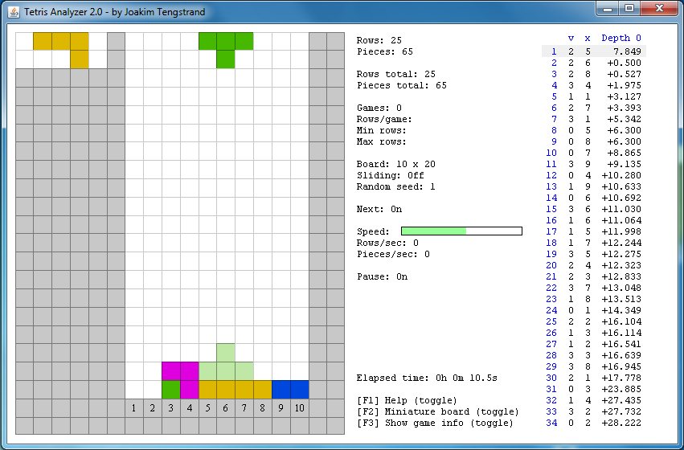

By Joakim Tengstrand - 2011
Tetris Analyzer is hosted at GitHub.
How to install and start the Scala version of Tetris Analyzer:
- Download Tetris Analyzer
- Make sure you have Java 1.6 or better installed (write in a shell: java -version)
- Double click on TetrisAnalyzer-2.0.01.jar (should work on Mac), and if that doesn't work:
- In a shell: java -jar TetrisAnalyzer-2.0.01.jar
You can also take a look at the old C++ version from 2001 on YouTube.
Here is my Tetris Analyzer Scala blog (in swedish).
Here is my Clojure blog (in english!).
Screenshot:
